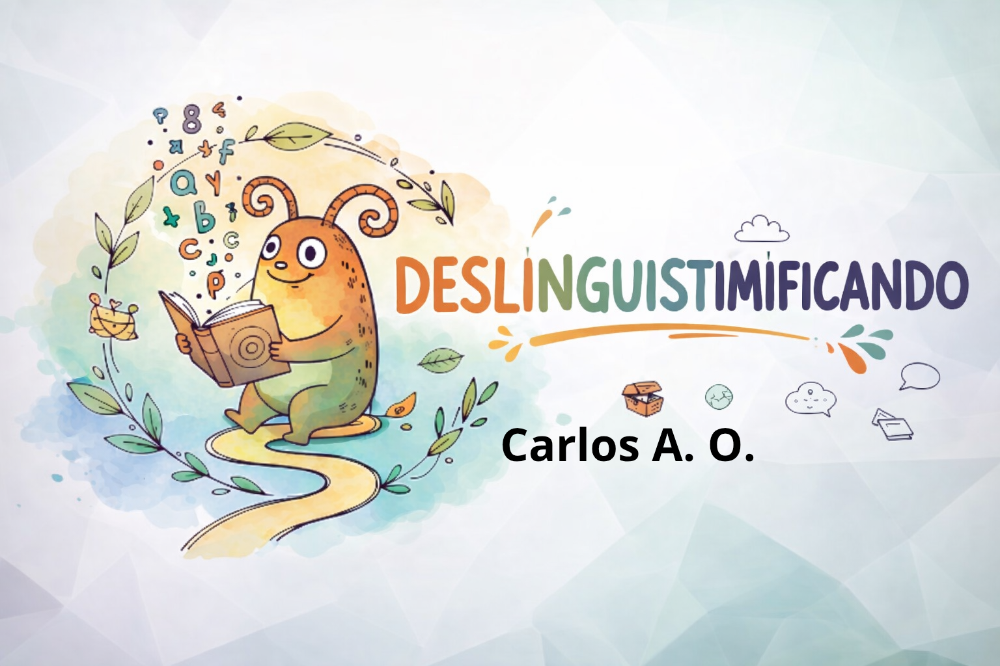

Introdução à página
Esta página, desmistificá-lhes-á um pouco de fonética. Por trás da comunicação humana, há um universo no qual será desbravado, por aqui, pelos estudos técnicos da ciência da comunicação humana. Este é um campo subestimado, por isso convidamo-lo para mudar de opinião. Não fique somente com nossos estudos, mas comece apredendo um pouco aqui. Apresetaremos as tabelas fonéticas mais importantes. Nosso canal no YouTube estará na seção "sobre" para acessar e nos conhecer melhor.
Conteúdo da página
Fizemos o site para a linguística com tabelas do IPA, explicação da física científica para os fenômenos fonéticos, distrubuição dos quadros fonéticos para ajudar e cores harmonicas para que desfrute de nosso trabalho com conforto e sem grandes preocupações.
Como se formou a palavra "deslinguistimificando"?
As palavras "desmistificar" — significa está desnudando algo, ou seja, descobrindo aquilo — e "linguística" — ciência que estuda a linguagem humana —, juntaram-se para criar um neologismo: deslinguistimificando, que é basicamente descobrindo a linguística. A linguística pode implicar também no uso do IPA, mas, no nosso caso, demos o nome mais em homenagem ao nosso canal no YouTube, que, por vez, foca na linguística.
Por que o IPA é importante?
O International Phonetic Alphabet — ou simplesmente AFI, em português, Alfabeto fonêtico internacional — é usado por linguistas e foneticistas e descreve a fala real do nativo, com precisão, quando a escrita padrão falha. Também é indispensável na recostrução de uma língua antiga/ morta como o latim, egípcio antigo, hebraico antigo etc. Além de podermos prever padrões que estão surgindo em uma língua viva.
Navegação pela página
Importante: aperte no ícone à esquerda para voltar à página inicial. Os links de navegação ficam no início da página. Não copie ou use as imagens sem autorização — mesmo com a marca-d'água. caso ache algum erro, fique a vontade para nos procurar. Tire dúvidas conosco pelo formulário, por gentileza, na aba "formulário".
Agradecimento
Agradecemos a Deus por sua graça manifesta em nossa saúde, ânimo, pelo ar que respiramos, amor e alegria para tememo-Lo. Obrigado a nossa família, amigos e a vocês pelo apoio incodicional. Deus o abençoe.